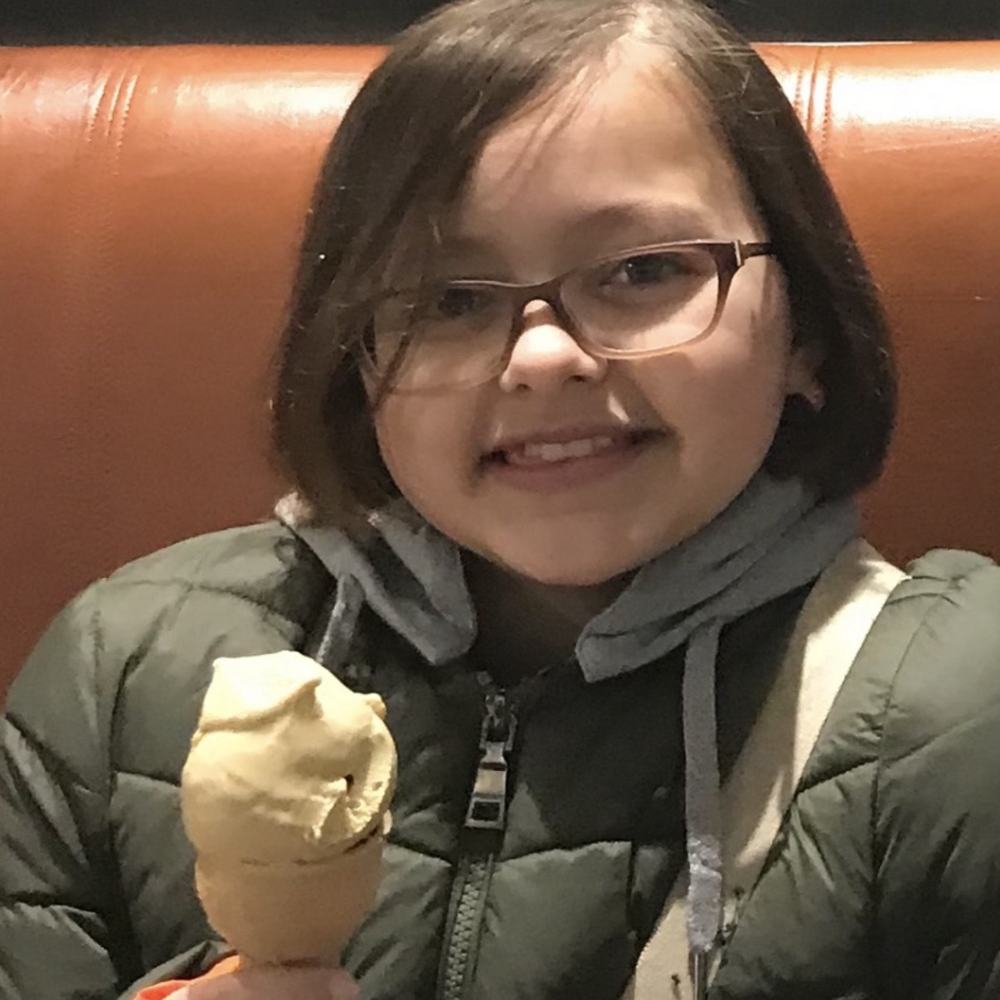
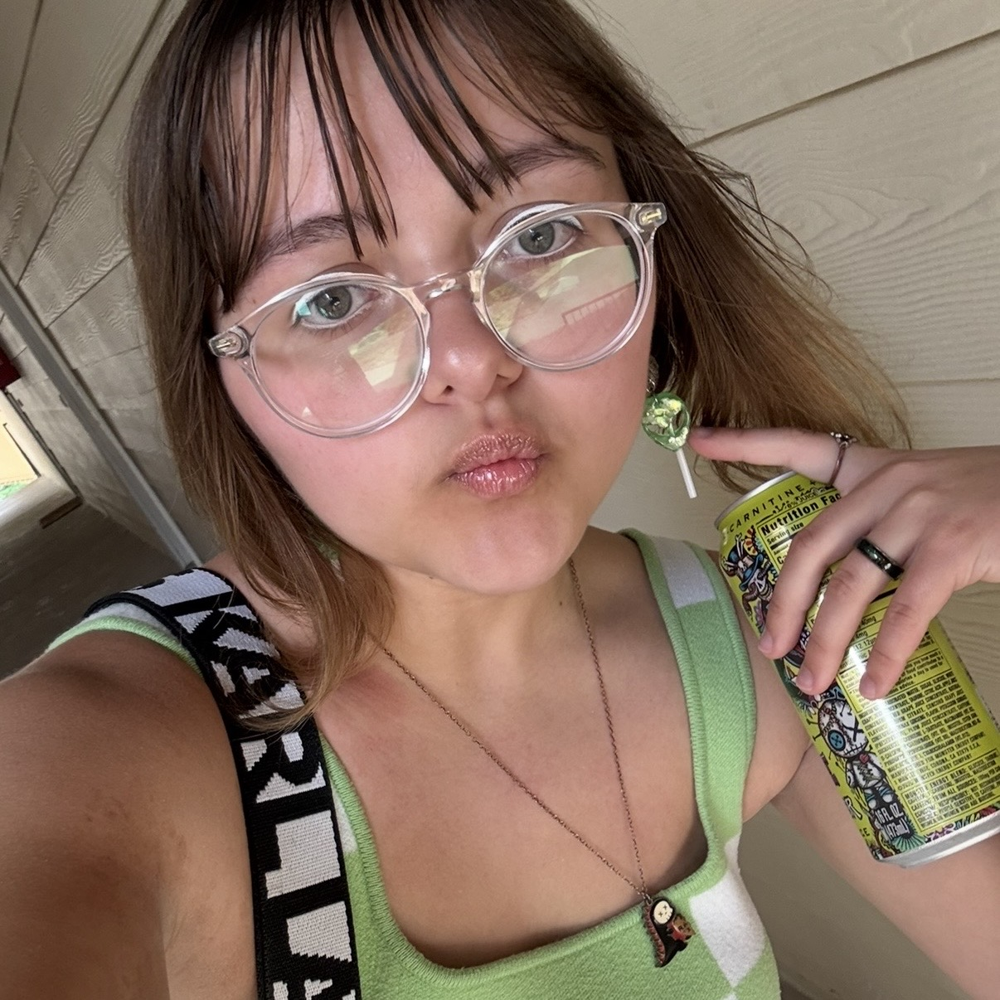
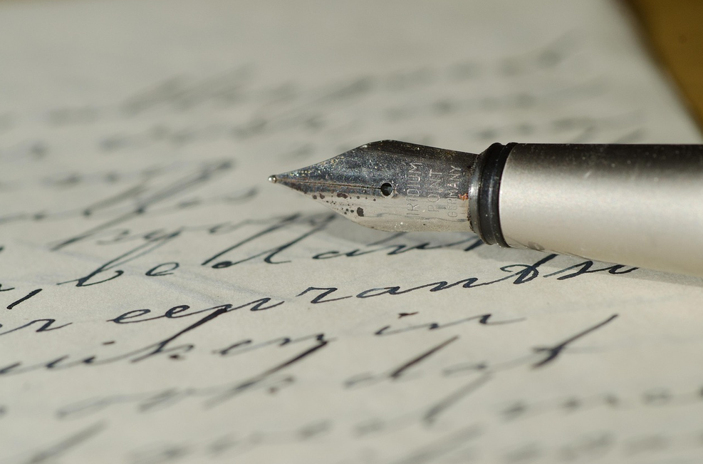
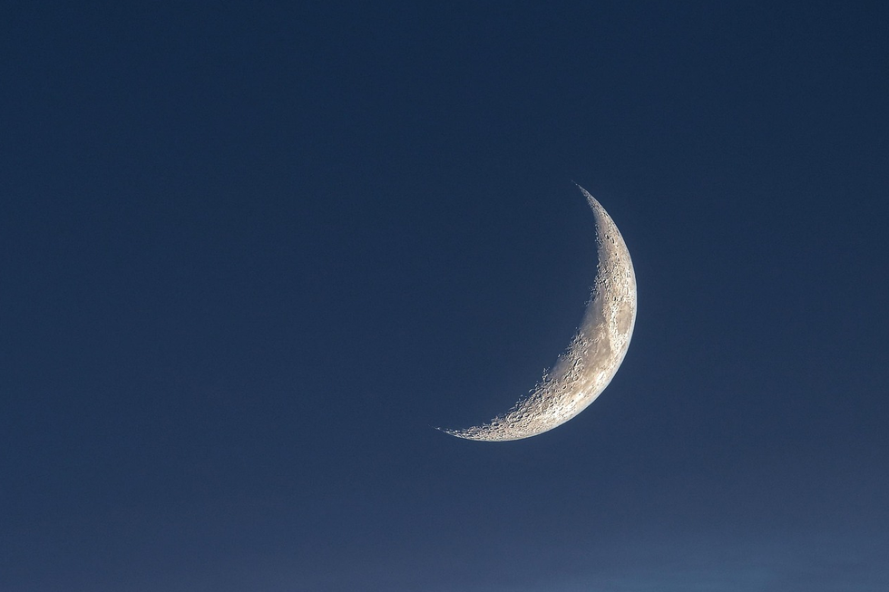
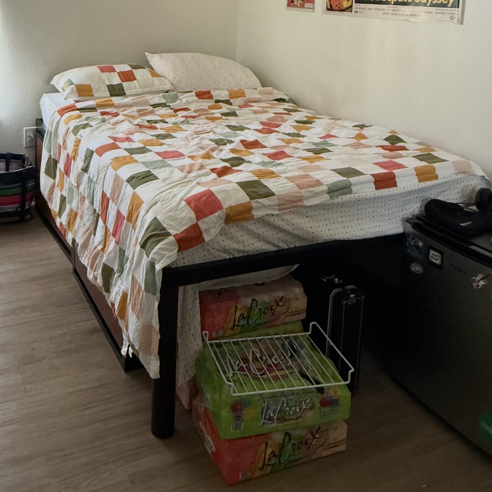
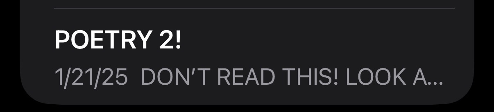
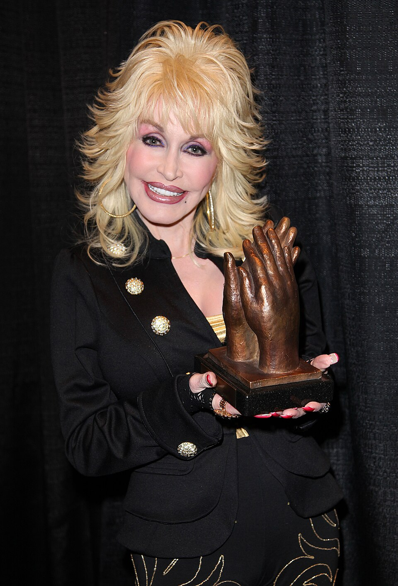

About Me
Hi there! My name is Natalia. I've been writing poetry since I was 12 years old.

Source: me

Source: me
I've changed a lot since then, and so has my writing.
My Hobby: Poetry
Do I really need to tell you what poetry is? Well, honestly, a lot of people I meet don't seem to get it. Poetry isn't just making things rhyme, or using a 7-5-7 syllable structure, or talking like Shakespeare. It CAN be those things, but it can also be basically whatever you want! Seriously, you can write almost anything and call it a poem. The only thing that distinguishes poems is that they typically break some of the rules of prose (normal writing). For example, poems are often symbolic rather than literal, intentionally misuse or ignore grammar and punctuation, and use unusual spacing and lines for emphasis.
Sometimes I see the sentiment that people who write poetry are scary, pretentious, or "performative". I don't think I'm any of those. Well, I like to think I'm not like that! I try to be friendly, I like pop music and bad movies (I watch Eight Crazy Nights every year), and I don't really show my writing to anyone these days.
Well... to contradict my last point, I want to show some of my poems here. Hey, it's my website!
My parents made me go to church today
But they gave Dum-Dums at the exit
So maybe it was worth it
My mom cried
I think it was about me
I was doing a dead-eyed stare at the stained glass
5/12/24

Source: Andrys on Pixabay
Quartz stalactites hang from my heart
Amplifying energy, allegro agitato
Through the otherworldly magic in my blood
With a sharp taste of iron
How does a soul speak without strings?
One eye open, orbiting a grave for eternity
An electric fiddle song on a glacier
Reverberating soundlessly
Physical form reduced to dust
In my childhood sandbox, inside living capsules
Organic automata in perfect spirals
Recycling death for life
3/27/25
I'm sorry I couldn't be good for you.
The spirit trapped within me
Thrashes wildly at the threat of silence
But atonia holds my weight down easily
And my vision blurs as you pick me apart.
I see myself reflected in your wide eyes.
I can't let you do this to yourself
But you don't waver in your decision any longer
You pick me apart and the sun sets early
2/9/26
When Do You Write Poetry?
I write whenever I feel like it. Usually, an idea comes into my head and I need to get it out. Sometimes, inspiration strikes when I'm in class or at work. When that happens, I try to write down my idea as soon as possible so I can write the poem at a more appropriate location.
Strong emotions are my biggest motivator. I write more when I'm depressed, anxious, or angry. Most of my poems are written late at night when I'm alone with my thoughts. I know that sounds really dark and "edgy", but it's honest. I think getting these feelings out through writing helps me stay emotionally regulated in my daily life. It does mess with my sleep schedule sometimes, though.

Source: Kanenori on Pixabay
Where Do You Write Poetry?
I write while laying in bed, riding the bus, enjoying a treat at a restaurant, wherever I feel like, as long as it isn't disrupting the people around me. Since I write on my phone, it's easy to do it anywhere.

Source: me
If you want to try writing, a location can help with inspiration. Here are some suggestions:
- Cafés
- Libraries
- Gardens (especially if it's a nature poem)
- Parks (peoplewatching can also be good inspiration)
How Do You Write Poetry?
I usually write using the Notes app on my phone. When I was starting out, I would write at my desk in my room on a small notepad.

Source: me
If I'm writing something that needs to rhyme, I'll use RhymeZone to help me. If a word doesn't sound right, I'll look up synonyms.
Why Do You Write Poetry?
“When emotions are too strong for words, sing.”
- famous saying in musical theater
My poems aren't usually songs, but this quote is relevant because plain words just aren't enough for me sometimes. Figurative language allows me to express myself in a way that prose simply cannot capture.
Since most people are more familiar with popular music than written poetry, I'll use a famous song as an example:
"Your beauty is beyond compare
With flaming locks of auburn hair
With ivory skin and eyes of emerald green
Your smile is like a breath of spring
Your voice is soft like summer rain
And I cannot compete with you, Jolene"
- "Jolene" by Dolly Parton
Imagine if Dolly had simply said You're beautiful. You have brown hair, clear skin, and green eyes. Your smile is pretty and your voice is gentle. I'll never be as pretty as you, Jolene
. That wouldn't be nearly as effective!

Source: "Dolly Parton accepting Liseberg Applause Award 2010" by Curtis Hilbun licensed under CC BY 3.0